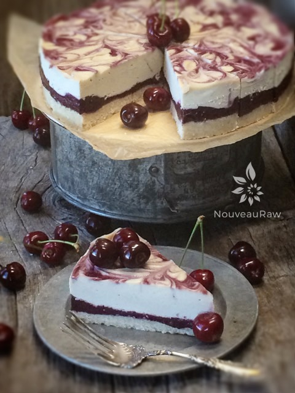

Bing Cherry Cheesecake

~ raw, vegan, gluten-free ~
There are over 1,000 different varieties of cherries. For the majority of my life, I thought there were just one… red, plump, sweet, and juicy ones. That was all that I needed to know. This cheesecake is rich with cherries… so if you don’t care for cherries, this recipe isn’t for you but for those of you who love cherries, don’t move! Stay put! Read, make, and enjoy.
Here, at Oldfather Farms, we have a small cherry orchard that consists of Bings and Rainiers which I am head over heels for. I am not about to sit here and list out every cherry that exists, but I will list out a few that grow in our local community.
My whole purpose behind sharing this information with you is that the different cherries have different tastes, just like apples and you might find that you prefer one cherry over the other.
- Bing Cherries ~ are the king of cherries and well-known. They are sweet, dark in color, and quite succulent.
- Lapin Cherries ~ are colossal in size and taste much like the Bing cherry.
- Rainier Cherries ~ are milder than Bing’s. They are a yellow cherry that is given a last-minute blush of color (by putting reflective mylar under the trees) which gives them the red underbellies. They are the sweetest of the bunch.
- Skeena Cherries ~ are large, deep dark red to the point of almost being black. They are firm, crisp, and they are about as sweet as they are rich in color.
- Sweetheart Cherries ~ are large, bright red, and mature later in the season. They are sweet but not too sugary.
- Regina Cherries ~ are a new cherry on the block that started in Germany. They are a deep-red cherry that is sweet with a firm crunch.
yields one 9” deep tart pan (16 slices)
Crust:
- 1 1/4 cup cashews, soaked & dehydrated
- 1/2 cup rolled gluten-free oats, soaked & dehydrated
- 1 1/2 cups shredded coconut
- 1/4 tsp Himalayan pink salt
- 1/4 cup cold-pressed coconut oil, softened
- 6 Tbsp water
- 3 Tbsp maple syrup
Cherry layer:
- 2 cups organic cherries
- 4 Medjool dates, pitted
- 2 Tbsp chia seeds
Filling:
- 3 cups raw cashews, soaked 2+ hours
- 3/4 cup water
- 1/2 cup lemon juice
- 3/4 cup raw maple syrup
- 2 tsp vanilla extract
- 1/4 tsp Himalayan pink salt
- 3/4 cup coconut oil, melted
- 3 Tbsp sunflower lecithin powder
Coulis: yields 1/3 cup
- 1/2 cup organic cherries
- 2 Tbsp maple syrup
- 2 Tbsp cold-pressed coconut oil
Preparation:
Crust:
- Line the base of the Springform pan with plastic wrap. Set aside.
- Place the cashews, oats, coconut, and salt in a food processor, fitted with an “S” blade. Process until it reaches a small crumble. About 15 seconds.
- Add the oil, water, and maple syrup. Process until the batter sticks together. The batter will seem a bit wet, that is all right.
- Place the crust in the pan and start pressing the dough into the base of the pan and up the sides of the pan (if you wish). Wetting your fingers will help so the batter doesn’t stick to your fingers. Once done set aside while you make the filling.
Cherry layer:
- In a food processor, fitted with an “S” blade, puree the cherries, chia seeds, and dates.
- Pour over crust and dehydrate at 145 degrees for 30-60 minutes. Concerned about 145 degrees? Read (here).
- Drain the soaked cashews and discard the soak water. Place in a high-speed blender.
- In a high-powered blender combine the; cashews, water, lemon juice, maple syrup, vanilla, and salt.
- Due to the volume and the creamy texture that we are going after, it is important to use a high-powered blender. It could be too taxing on a lower-end model.
- Blend until the filling is creamy smooth. You shouldn’t detect any grit. If you do, keep blending.
- This process can take 2-4 minutes, depending on the strength of the blender. Keep your hand cupped around the base of the blender carafe to feel for warmth. If the batter is getting too warm. Stop the machine and let it cool. Then proceed once cooled.
- You can use a different liquid sweetener if you are not comfortable with maple syrup. Just be aware of the different flavors and colors that the sweetener might impart in the cake.
- With a vortex going in the blender, drizzle in the coconut oil, and then add the lecithin. Blend just long enough to incorporate everything together. Don’t over-process. The batter will start to thicken.
- What is a vortex? Look into the container from the top and slowly increase the speed from low to high, the batter will form a small vortex (or hole) in the center. High-powered machines have containers that are designed to create a controlled vortex, systematically folding ingredients back to the blades for smoother blends and faster processing… instead of just spinning ingredients around, hoping they find their way to the blades.
- If your machine isn’t powerful enough or built to do this, you may need to stop the unit often to scrape the sides down.
- Pour the batter into the pan.
- Gently tap the pan on the counter to remove any air bubbles.
- Chill in the freezer for 4-6 hours and then in the fridge for 12 hours.
- Store the cheesecake in the fridge for 3-5 days or up to 3 months in the freezer. Be sure that they are well sealed to avoid fridge odors.
Coulis and assembly:
- In the blender combine the cherries, maple syrup, and oil until creamy and smooth. The oils help the coulis from being too watery.
- Pour into a squeeze bottle.
- To create the swirl effect, poke the nipple of the squeeze bottle into the cheesecake batter. Gently squeeze the bottle as you slowly withdraw, allowing some of the coulis to bubble out on top. Do this all over the cake.
- Then take a skewer stick and drag it through the coulis dots creating a swirl.
- Store the cheesecake in the fridge overnight to set up or in the freezer. Take out of the freezer and cut into 16 slices. Serve right away or allow it to rest for 10-20 minutes to soften.

© AmieSue.com